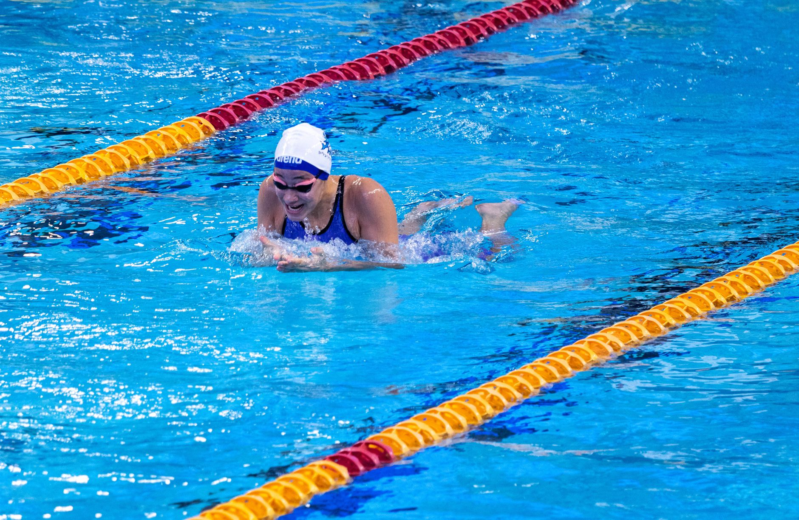

A Scholarship Opportunity Worth Knowing About
The College Swimming and Diving Coaches Association recently announced that applications are now open for the 2026–27 Jean Freeman Scholarship, a meaningful financial award dedicated to student-athletes who compete in collegiate swimming and diving. News like this is an important reminder that the journey toward college athletic funding begins long before a young athlete ever sets foot on a college campus.
For families in Wesley Chapel, Land O' Lakes, and across the greater Tampa Bay area, understanding how scholarship pipelines work — and what coaches and selection committees look for — can make a significant difference in a swimmer's future opportunities.
Why Starting Early Matters
Many parents are surprised to learn that the foundation for college recruiting is often laid during a young athlete's middle school and early high school years. College coaches and scholarship committees are not simply looking for fast times. They are evaluating the whole athlete — academic performance, character, coachability, and demonstrated commitment to the sport over time.
This means that the habits young swimmers build today, whether in the pool or in the classroom, are actively shaping the opportunities available to them years from now. Consistent training, strong grades, and a genuine love for the sport are not small details. They are the building blocks of a competitive scholarship application.
What Scholarship Committees Look For
While every scholarship has its own specific criteria, most awards for collegiate swimmers share a set of common expectations. Families should help their young athletes focus on the following areas:
- Academic excellence: A strong GPA and a record of taking challenging coursework signal that a student-athlete can handle the demands of collegiate life alongside a competitive training schedule.
- Competitive times and progression: Coaches want to see improvement over time. A swimmer who shows consistent growth is often more appealing than one who peaked early and plateaued.
- Leadership and character: Participation in team roles, community service, and positive relationships with coaches all speak to who an athlete is beyond their event times.
- Letters of recommendation: Coaches, teachers, and mentors who can speak specifically to a young athlete's dedication and potential carry significant weight in the selection process.
How to Build a Strong Foundation Right Now
If your young swimmer is currently competing in club or school programs in the Wesley Chapel or Land O' Lakes area, there are practical steps you can take today to set the stage for future opportunities.
- Keep a training log that tracks times, personal bests, and performance goals throughout each season.
- Prioritize communication with coaches and ask for honest, constructive feedback after every meet or tournament.
- Begin researching college programs and scholarship opportunities early — ideally by the eighth or ninth grade — so the process feels manageable rather than overwhelming.
- Encourage young athletes to take ownership of their sport by attending optional practices, studying technique independently, and setting personal benchmarks.
The Role of Quality Coaching in the Recruiting Journey
One of the most significant advantages a young athlete can have is access to coaches who understand the recruiting landscape and genuinely invest in the long-term development of each swimmer. At Nexar Aquatic Academy, our coaching staff is committed to developing not just faster athletes, but well-rounded competitors who are prepared for the academic and athletic rigors of collegiate programs.
We believe that every young athlete who steps into our pool deserves to know that their hard work can lead somewhere meaningful — including the college pool deck of their dreams.
Take the Next Step
Scholarship opportunities like the Jean Freeman Award exist because the swimming community recognizes the incredible dedication it takes to compete at a high level while excelling in the classroom. If your family is based in the Tampa Bay area and you want to learn more about how Nexar Aquatic Academy supports swimmers on the path toward collegiate competition, we encourage you to reach out to our team. The best time to start preparing is always right now.
Ready to get in the water?
First practice is completely FREE — no commitment needed.